Long Story Short 2026
Long Story Short è una sfida a tempo di brevi opere cinematografiche, a metà tra un laboratorio collettivo e un tradizionale contest di cortometraggi a tempo, in cui ogni troupe scrive, gira e monta un corto originale in pochi giorni.
Dal 24 al 28 giugno 2026 sette troupe, composte da più di settanta partecipanti fra i 16 e i 35 anni, girano fra Rimini e dintorni. L’evento di lancio, mercoledì 24 al Cinema Teatro Tiberio, svela la cornice narrativa che fa da contenitore ai cortometraggi e assegna a ogni troupe percorso e genere; alle 20:30 partono i quattro giorni di produzione.
La serata finale, il 10 luglio 2026 al Cinema Teatro Tiberio, restituisce al pubblico i sette corti in sala, con le premiazioni della giuria di settore e della giuria stampa, il tutto seguito da una festa nel chiostro.
Galleria
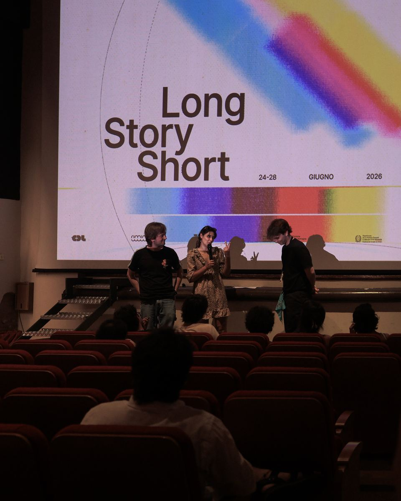


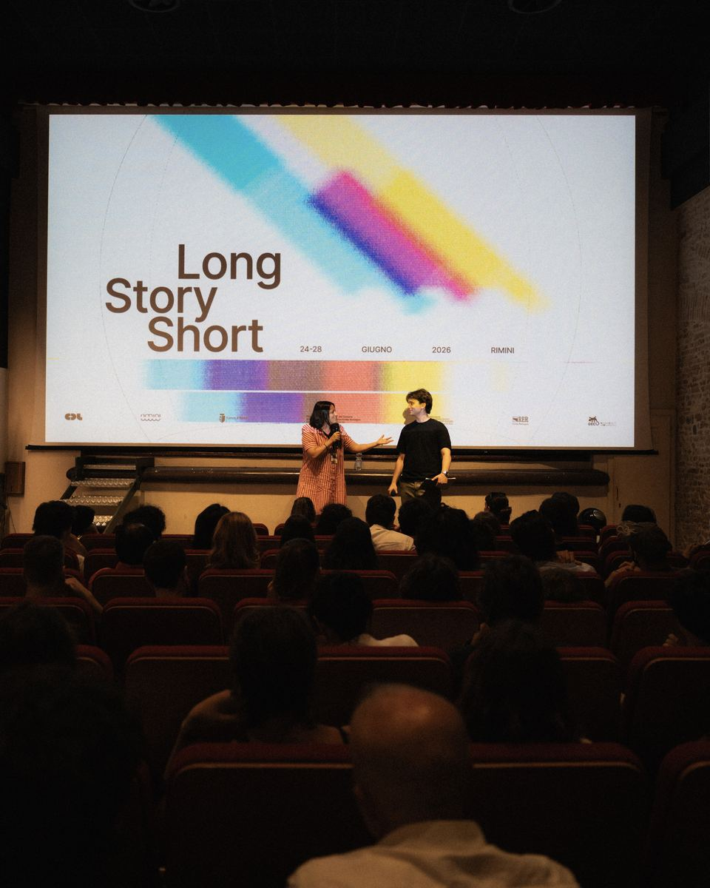
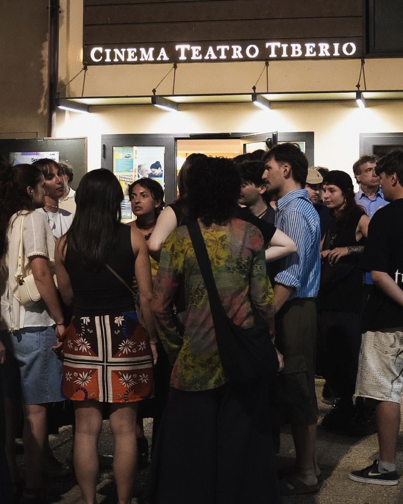
Vincitori
-
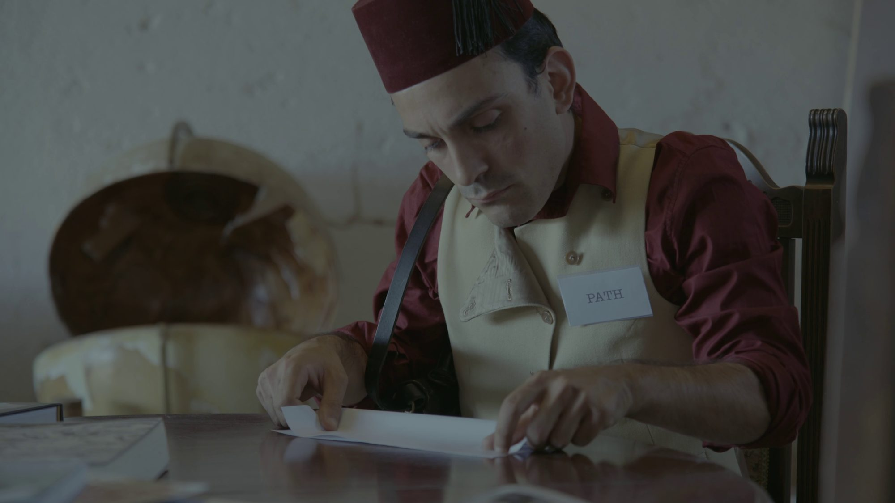
Path
Lorenzo Muccioli · 12’
- Miglior film
- Menzione per l’interpretazione · Enrico Battarra
-
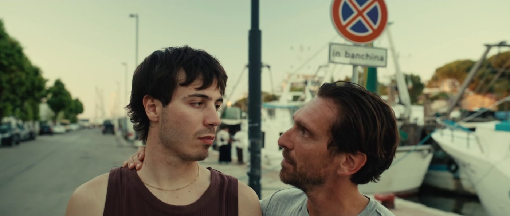
Emilio
Luca Canarecci · 12’
- Miglior regia · Luca Canarecci
- Miglior montaggio · Cristian Morello e Gabriele Rattini
- Menzione per l’interpretazione · Gabriele Rattini
-
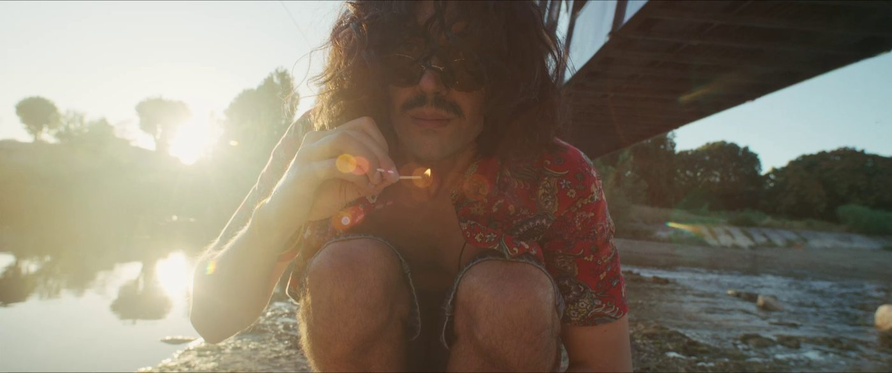
Scintille
Leonardo Paganelli · 12’
- Miglior interpretazione · Sophia Anna Losito
- Miglior fotografia · Jacopo Todoli
-
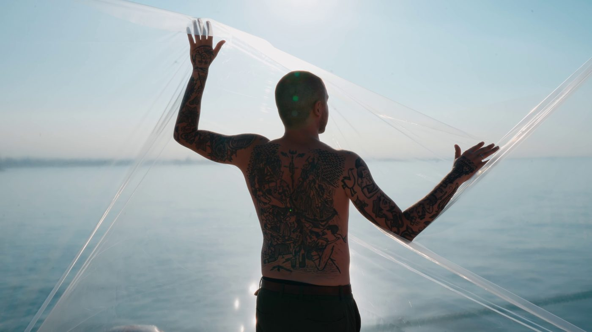
Capolinea
Vittoria Casarini · 4’
- Miglior sonoro · Alessandro Fabbri
- Premio stampa “Nuovi Sguardi” · giuria stampa The Soundcheck
-
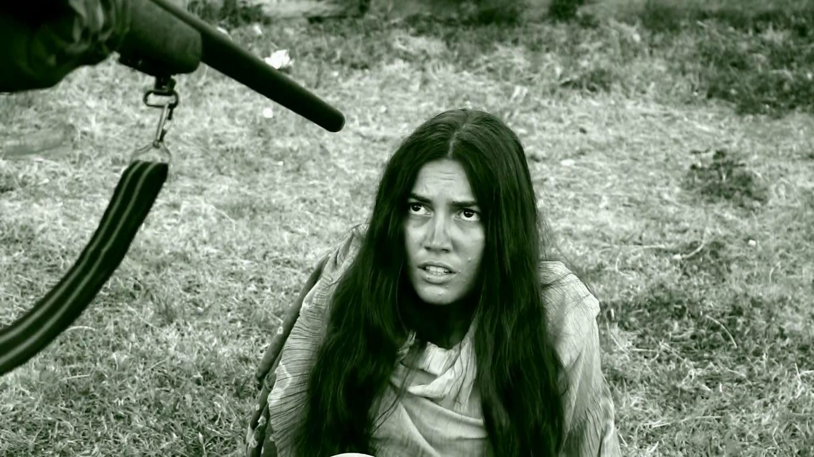
L’Umanità Perduta
Ivan Petrović-Poljak · 11’
- Miglior soggetto · Ivan Petrović-Poljak
-
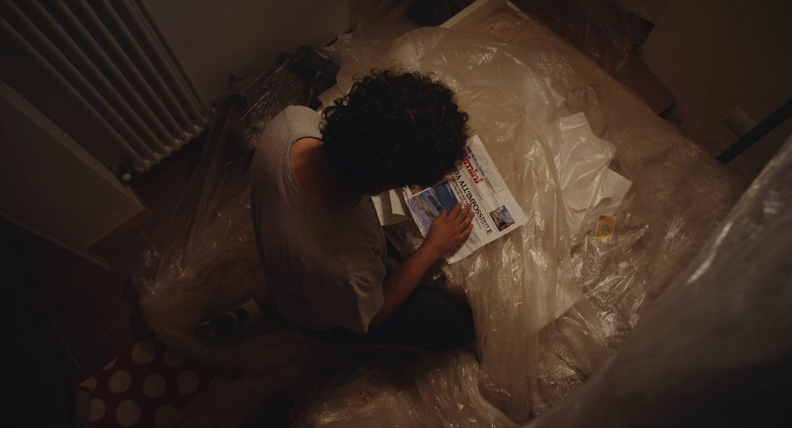
Solo per l’estate
Manuel Baggiarini · 10’
- Miglior produzione · troupe I Fondo Perduto
-
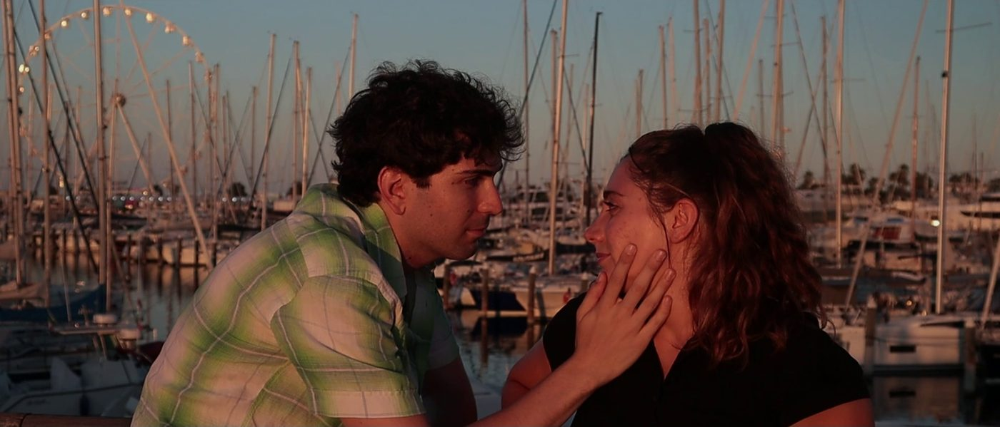
Le Cose che Restano
Gabriele Montanaro · 11’
- Menzione per la produzione · Gabriele Montanaro e Mari Colavalle
Materiali della prima edizione
Partner
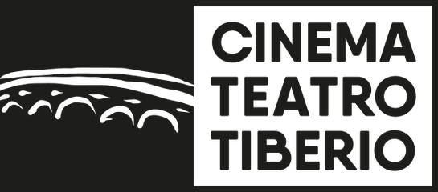
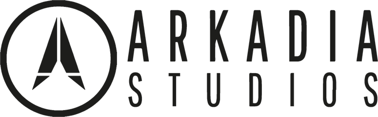
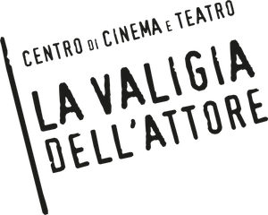
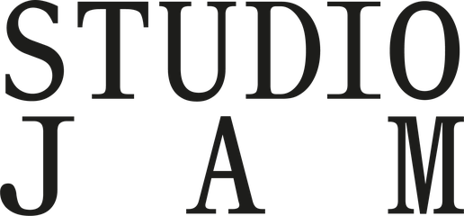
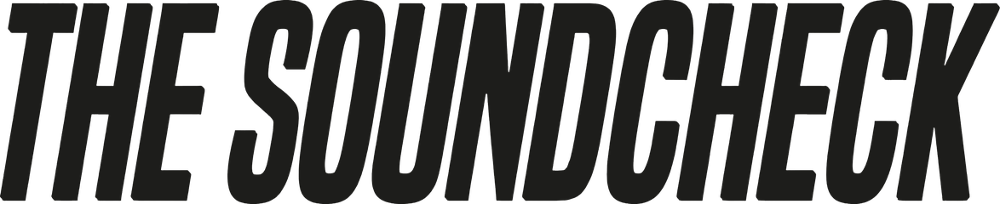
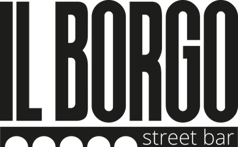
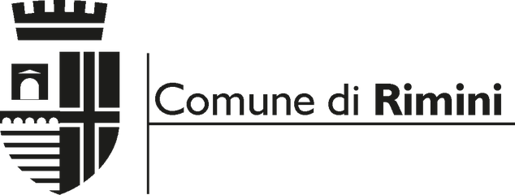
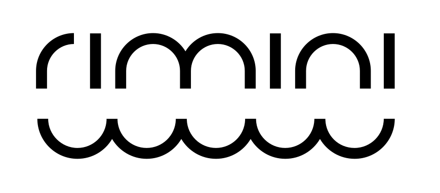